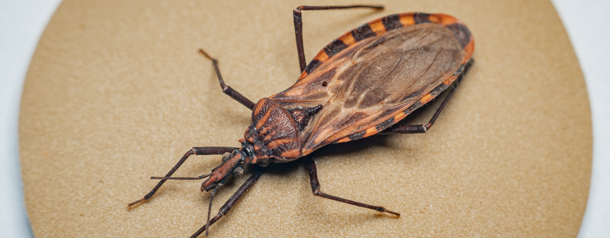

Doença de Chagas: como é transmitida, como deve ser tratada e o que fazer para evitar
COMPOSTOS BIOATIVOS
Conheça os elementos essenciais para produção de vacinas e remédios
DENGUE GRAVE
Entenda por que o risco aumenta após você ser infectado pela segunda vez
INFLUENZA
É falso dizer que a vacina da gripe não protege contra o vírus e que será de mRNA
ZOONOSES
Saiba mais sobre as doenças que migram de animais para os humanos